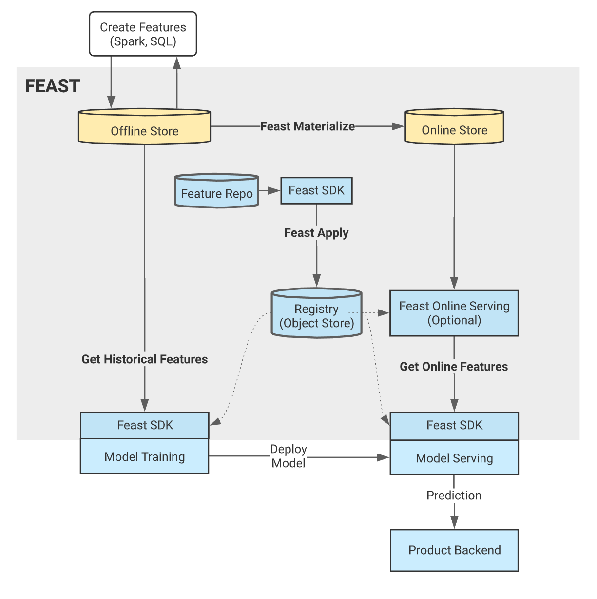

Feature Store¶
Introduction¶
Feast (Feature Store) is a customizable operational data system that re-uses existing infrastructures to manage and serve machine learning (ML) features to models.
Feature sharing and reuse: Feature engineering is one of the most time consuming activities in building an end-to-end ML system, yet many teams continue to develop features in silos. This leads to a high amount of re-development and duplication of work across teams and projects.
Serving features at scale: Models need data from a variety of sources, including event streams, data lakes, warehouses, or notebooks. ML teams need to store and serve all these data for their models in a performant and reliable way. The challenge is to scalably produce massive datasets of features for model training, and provide access to real-time feature data at low latency and high throughput in serving.
Consistency between training and serving: The separation between data scientists and engineering teams often lead to the re-development of feature transformations when moving from training to online serving. Inconsistencies that arise due to discrepancies between training and serving implementations frequently leads to a drop in model performance in production.
Feast helps ML teams with development and operations (DevOps) experience productionize real-time models. Feast can also help these teams build towards a feature platform that improves collaboration between engineers and data scientists.
If you want to know the basic knowledges, such as simple feature repo, please refer to feast-quick-start. For more detailed information about Feast, please refer to Feast official website, and to understand how it works, please refer to its source code.
Get started¶
In this section, you use Feast to share features for training offline models, do online model inference for a ride-sharing driver satisfaction prediction model. You put data into S3 object (MinIO) for model training and store feature into S3 object to share for model inference later.
Grab the code examples to learn how to use feast to help development.
Here is the roadmap:
Set up a feature repo using MinIO S3 bucket for registry.
Use the offline features to train model.
Make predictions using online features by SQLite.
The following graph shows the overall workflow.
Upload data to MinIO bucket¶
If you already have the MinIO storage, you can directly skip the MinIO deployment step, and follow the next steps to upload data to MinIO. If not, we also provide a standalone MinIO deployment guide on the kubernetes clusters. You use the following YAML content and execute this command in your terminal.
# create pvc, MinIO service, MinIO deployment if you have not MinIO storage
cat << EOF | kubectl apply -f -
apiVersion: v1
kind: PersistentVolumeClaim
metadata:
# This name uniquely identifies the PVC. Will be used in deployment below.
name: minio-pv-claim
labels:
app: minio-storage-claim
annotations:
volume.beta.kubernetes.io/storage-class: pacific-storage-policy # replace it with yourself environment storage-class
spec:
# Read more about access modes here: http://kubernetes.io/docs/user-guide/persistent-volumes/#access-modes
accessModes:
- ReadWriteOnce
storageClassName: pacific-storage-policy
resources:
# This is the request for storage. Should be available in the cluster.
requests:
storage: 10Gi
---
apiVersion: v1
kind: Service
metadata:
name: minio-service
spec:
type: LoadBalancer
ports:
- port: 9000
name: http
targetPort: 9000
protocol: TCP
- port: 9001
name: console
targetPort: 9001
protocol: TCP
selector:
app: minio
---
apiVersion: apps/v1 # for k8s versions before 1.9.0 use apps/v1beta2 and before 1.8.0 use extensions/v1beta1
kind: Deployment
metadata:
# This name uniquely identifies the Deployment
name: minio-deployment
spec:
selector:
matchLabels:
app: minio
strategy:
type: Recreate
template:
metadata:
labels:
# Label is used as selector in the service.
app: minio
spec:
# Refer to the PVC created earlier
volumes:
- name: storage
persistentVolumeClaim:
# Name of the PVC created earlier
claimName: minio-pv-claim
containers:
- name: minio
# Pulls the default Minio image from Docker Hub
image: minio/minio:latest
args:
- server
- --console-address
- :9001
- /storage
env:
# Minio access key and secret key
- name: MINIO_ACCESS_KEY
value: "minioadmin"
- name: MINIO_SECRET_KEY
value: "minioadmin"
ports:
- containerPort: 9000
- containerPort: 9001
# Mount the volume into the pod
volumeMounts:
- name: storage # must match the volume name, above
mountPath: "/storage"
EOF
This step uploads data to MinIO buckets. You need to find the MinIO endpoint_url, accesskey, secretkey before upload using the following commands in your terminal.
# get the endpoint url for MinIO
$ kubectl get svc minio -n kubeflow -o jsonpath='{.spec.clusterIP}'
# get the secret name for Minio. your-namespace is admin for this cluster.
$ kubectl get secret -n <your-namespace> | grep minio
# get the access key for MinIO
$ kubectl get secret <minio-secret-name> -n <your-namespace> -o jsonpath='{.data.accesskey}' | base64 -d
# get the secret key for MinIO
$ kubectl get secret <minio-secret-name> -n <your-namespace> -o jsonpath='{.data.secretkey}' | base64 -d
Now you create a notebook refer to Notebooks, then upload data to MinIO bucket in the notebook server.
You need to install boto3 dependency package in the notebook server created previously:
!pip install boto3 -i https://pypi.tuna.tsinghua.edu.cn/simple
We’ve made some dummy data. You need to create infra folder and download driver_stats.parquet file, put driver_stats.parquet file into infra folder. Now You run the follow Python code to upload model files.
import os
from urllib.parse import urlparse
import boto3
# Update these parameters about your environment
os.environ["FEAST_S3_ENDPOINT_URL"] = "http://<your_minio_endpoint_url>:9000" # repalce it to your MinIO endpoint url
os.environ["AWS_ACCESS_KEY_ID"] = "<your_minio_access_key>" # repalce it to your MinIO access key
os.environ["AWS_SECRET_ACCESS_KEY"] = "<your_minio_secret_key>" # repalce it to your MinIO secret key
s3 = boto3.resource('s3',
endpoint_url=os.getenv("FEAST_S3_ENDPOINT_URL"),
verify=False)
# Create a bucket
bucket_name='featurestore'
s3.create_bucket(Bucket=bucket_name)
# Check if the newly bucket exists
print(list(s3.buckets.all()))
# Upload data file to the newly bucket
bucket = s3.Bucket(bucket_name)
bucket_path = "infra"
bucket.upload_file("infra/driver_stats.parquet", os.path.join(bucket_path, "driver_stats.parquet"))
# check files
for obj in bucket.objects.filter(Prefix=bucket_path):
print(obj.key)
Install Feast and dependency packages¶
Now you need to install the dependencies for Feast in the notebook server in order to access Feast CLI.
!pip install scikit-learn
!pip install "numpy>=1.16.5,<1.23.0"
!pip install pyarrow
!pip install s3fs
!pip install feast==0.29.0
# fix: TypeError: cannot create weak reference to 'property' object
# reference: https://github.com/feast-dev/feast/issues/3538
!pip install typeguard==2.13.3
Exploring the data¶
Let’s dive into what the data ./infra/driver_stats.parquet downloaded before looks like.
import pandas as pd
pd.read_parquet("infra/driver_stats.parquet")
This is a set of time-series data with driver_id as the primary key (representing the driver entity) and event_timestamp as showing when the event happens.
Setup the feature repo to register features¶
Let’s setup a feature repo for the feast project following the next steps. Meanwhile, if you want to know more basic knowledges, such as a simple feature repo by yourself, please refer to feast-quick-start.
Setup the feature repo¶
Create a Python file named data_sources.py as shown in below screenshot to load data from S3 storage.
from feast import FileSource
import s3fs
bucket_name = "featurestore"
file_name = "driver_stats.parquet"
s3_endpoint = "http://<your_minio_endpoint_url>:9000" # repalce it to your MinIO endpoint url
s3 = s3fs.S3FileSystem(key='<your_minio_access_key>', # repalce it to your MinIO access key
secret='<your_minio_secret_key>', # repalce it to your MinIO secret key
client_kwargs={'endpoint_url': s3_endpoint}, use_ssl=False)
driver_stats = FileSource(
name="driver_stats_source",
path="s3://featurestore/infra/driver_stats.parquet", # Replace it with your bucket
s3_endpoint_override="http://<your_minio_endpoint_url>:9000", # repalce it to your MinIO endpoint url
timestamp_field="event_timestamp",
created_timestamp_column="created",
description="A table describing the stats of a driver based on hourly logs",
owner="test2@gmail.com",
)
Create a Python file named entities.py to construct composite keys to join feature views together.
from feast import (
Entity,
ValueType,
)
driver = Entity(
name="driver",
join_keys=["driver_id"],
value_type=ValueType.INT64,
description="driver id",
)
Create a Python file named features.py to define the various feature views corresponding to different logical groups of features and transformations from data sources keyed on entities.
from datetime import timedelta
from feast import (
FeatureView,
Field,
)
from feast.types import Float32
from data_sources import *
from entities import *
driver_hourly_stats_view = FeatureView(
name="driver_hourly_stats",
description="Hourly features",
entities=[driver],
ttl=timedelta(seconds=8640000000),
schema=[
Field(name="conv_rate", dtype=Float32),
Field(name="acc_rate", dtype=Float32),
],
online=True,
source=driver_stats,
tags={"production": "True"},
owner="test2@gmail.com",
)
Create a Python file named feature_services.py to build different model versions with different sets of features using feature services (model_v1, model_v2).
from feast import FeatureService
from features import *
feature_service = FeatureService(
name="model_v1",
features=[driver_hourly_stats_view[["conv_rate"]]],
owner="test3@gmail.com",
)
feature_service_2 = FeatureService(
name="model_v2", features=[driver_hourly_stats_view], owner="test3@gmail.com",
)
Create a YAML file named feature_store.yaml containing a demo setup configuring data sources.
project: feast_demo_minio
provider: local
registry: s3://featurestore/infra/registry.pb # replace it with your bucket
online_store:
type: sqlite
path: data/online_store.db
offline_store:
type: file
entity_key_serialization_version: 2
A quick explanation of what’s happening in this feature_store.yaml:
Key |
What it does |
Example |
|---|---|---|
project |
Gives infrastructure isolation via namespacing (e.g. online stores + Feast objects). |
any unique name within your organization (e.g. feast_demo_minio) |
provider |
Defines registry location & sets defaults for offline / online stores |
local, aws, gcp (MinIO has S3 object and installed on Kubeflow) |
registry |
Defines the specific path for the registry (local, gcs, s3, etc) |
s3://[YOUR BUCKET]/registry.pb |
online_store |
Configures online store (if needed for supporting real-time models) |
null, sqlite, redis, dynamodb, datastore, postgres (each have their own extra configs) |
offline_store |
Configures offline store, which executes point in time joins |
bigquery, snowflake.offline, redshift, spark, trino (each have their own extra configs) |
Run feast plan¶
With the feature_store.yaml setup, you now run feast plan to see what changes happen with feast apply.
!feast plan
Sample output:
02/22/2023 02:48:14 AM botocore.credentials INFO: Found credentials in environment variables.
Created entity driver
Created feature view driver_hourly_stats
Created feature service model_v1
Created feature service model_v2
Created sqlite table feast_demo_minio_driver_hourly_stats
Run feast apply¶
This parses the feature, data source, and feature service definitions and publishes them to the registry. It also sets up some tables in the online store to materialize batch features.
!feast apply
# output
02/22/2023 02:48:14 AM botocore.credentials INFO: Found credentials in environment variables.
Created entity driver
Created feature view driver_hourly_stats
Created feature service model_v1
Created feature service model_v2
Deploying infrastructure for feast_demo_minio_driver_hourly_stats
Verify features are registered¶
You now run Feast CLI commands to verify that Feast knows about your features and data sources.
!feast feature-views list
# output
02/22/2023 02:48:43 AM botocore.credentials INFO: Found credentials in environment variables.
NAME ENTITIES TYPE
driver_hourly_stats {'driver'} FeatureView
Fetch offline features to train model¶
Use get_historical_features API to retrieve features (by referencing features directly or via feature services). Under the hood, it manages point-in-time joins and avoids data leakage to generate training datasets.
You need to get the data driver_orders.csv using the following command.
!wget https://github.com/feast-dev/feast-gcp-driver-ranking-tutorial/blob/master/driver_orders.csv
Use get_historical_features API to train model.
from feast import FeatureStore
from joblib import dump
import pandas as pd
from sklearn.linear_model import LinearRegression
# Load driver order data, when orders give to entity_df, it shows 0 entries
orders = pd.read_csv("driver_orders.csv", sep="\t")
orders["event_timestamp"] = pd.to_datetime(orders["event_timestamp"])
print(orders)
# Connect to your feature store provider
store = FeatureStore(repo_path="./")
# Because we're using the default FileOfflineStore, this executes on your machine
training_df = store.get_historical_features(
entity_df=orders,
features=store.get_feature_service("model_v2"),
).to_df()
print("----- Feature schema -----\n")
print(training_df.info())
print()
print("----- Example features -----\n")
print(training_df.head())
# Train model
target = "trip_completed"
reg = LinearRegression()
train_X = training_df[training_df.columns.drop(target).drop("event_timestamp")]
train_Y = training_df.loc[:, target]
reg.fit(train_X[sorted(train_X)], train_Y)
# Save model
dump(reg, "driver_model.bin")
The output looks like the following and the trained model file driver_model.bin is saved in the current directory.
event_timestamp driver_id trip_completed
0 2021-04-16 20:29:28+00:00 1001 1
1 2021-04-17 04:29:28+00:00 1002 0
2 2021-04-17 12:29:28+00:00 1003 0
3 2021-04-17 20:29:28+00:00 1001 1
4 2021-04-18 04:29:28+00:00 1002 0
5 2021-04-18 12:29:28+00:00 1003 0
6 2021-04-18 20:29:28+00:00 1001 1
7 2021-04-19 04:29:28+00:00 1002 0
8 2021-04-19 12:29:28+00:00 1003 0
9 2021-04-19 20:29:28+00:00 1004 1
----- Feature schema -----
<class 'pandas.core.frame.DataFrame'>
RangeIndex: 10 entries, 0 to 9
Data columns (total 5 columns):
# Column Non-Null Count Dtype
--- ------ -------------- -----
0 event_timestamp 10 non-null datetime64[ns, UTC]
1 driver_id 10 non-null int64
2 trip_completed 10 non-null int64
3 conv_rate 10 non-null float32
4 acc_rate 10 non-null float32
dtypes: datetime64[ns, UTC](1), float32(2), int64(2)
memory usage: 448.0 bytes
None
----- Example features -----
event_timestamp driver_id trip_completed conv_rate acc_rate
0 2021-04-16 20:29:28+00:00 1001 1 0.521149 0.751659
1 2021-04-17 04:29:28+00:00 1002 0 0.089014 0.212637
2 2021-04-17 12:29:28+00:00 1003 0 0.188855 0.344736
3 2021-04-17 20:29:28+00:00 1001 1 0.521149 0.751659
4 2021-04-18 04:29:28+00:00 1002 0 0.089014 0.212637
['driver_model.bin']
Fetch online features from SQLite to predict¶
First you materialize features (which generate the latest values for each entity key from batch sources) into the online store (SQLite).
!feast materialize-incremental $(date +%Y-%m-%d)
Now you can retrieve these materialized features from SQLite directly using the SDK, loading the trained model file generated before, to make predictions.
import pandas as pd
import feast
from joblib import load
class DriverRankingModel:
def __init__(self):
# Load model
self.model = load("driver_model.bin")
# Set up feature store
self.fs = feast.FeatureStore(repo_path="./")
def predict(self, driver_ids):
# Read features from Feast
driver_features = self.fs.get_online_features(
entity_rows=[{"driver_id": driver_id} for driver_id in driver_ids],
features=[
"driver_hourly_stats:conv_rate",
"driver_hourly_stats:acc_rate",
],
)
df = pd.DataFrame.from_dict(driver_features.to_dict())
# Make prediction
df["prediction"] = self.model.predict(df[sorted(df)])
# Choose best driver
best_driver_id = df["driver_id"].iloc[df["prediction"].argmax()]
# return best driver
return best_driver_id
def make_drivers_prediction():
drivers = [1001, 1002, 1003, 1004]
model = DriverRankingModel()
best_driver = model.predict(drivers)
print(f"Prediction for best driver id: {best_driver}")
make_drivers_prediction()
The result output is Prediction for best driver id: 1003.
Troubleshooting¶
TypeError when execute feast plan or feast apply¶
If you execute feast plan or feast apply and get the following error:
"TypeError: the 'package' argument is required to perform a relative import for '.ipynb_checkpoints.data_sources-checkpoint' or '.jupyter.jupyter_lab_config'".
You can remove the following 2 files and then run feast plan or east apply again. It will be fine now.
!rm -rf .ipynb_checkpoints
!rm -rf .jupyter